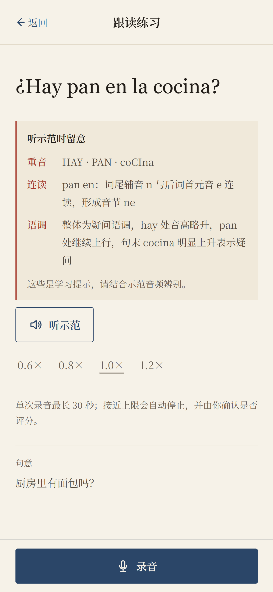

ONDA ESPAÑOL / BEFORE SPEAKING
先知道怎么听，
再开始开口。
在开口之前，系统先帮你知道该听什么、
先模仿什么。通过提示重音、连读和语调，
让你有目标地去听、去模仿，听得更清楚，
开口也更有把握。
先听懂，才更敢开口。

01 / GUIDED LISTENING
让“听”变成有方向的观察。
在听示范之前，系统会明确提示本句的重音、连读、语调等关键点，让你知道该留意什么，避免盲听，更有针对性地模仿。
02 / PACED IMITATION
先听清，再跟上。
支持多种播放速度，先放慢听清发音细节，再回到正常语速进行跟读模仿，逐步建立语感。